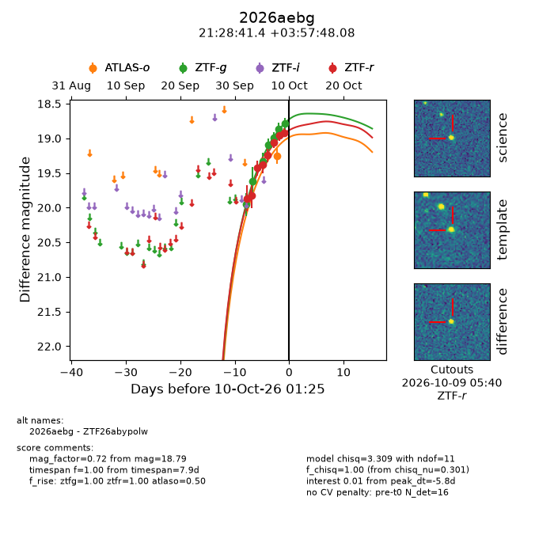
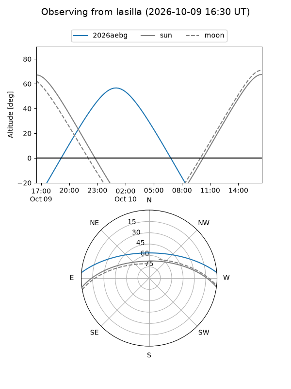
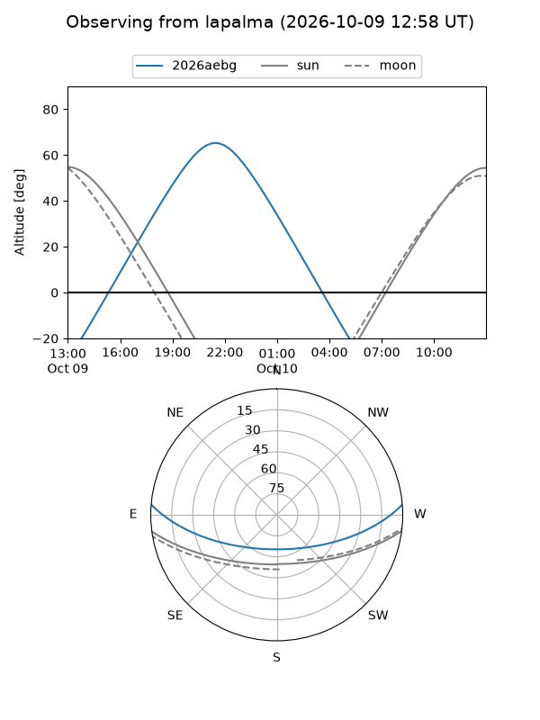
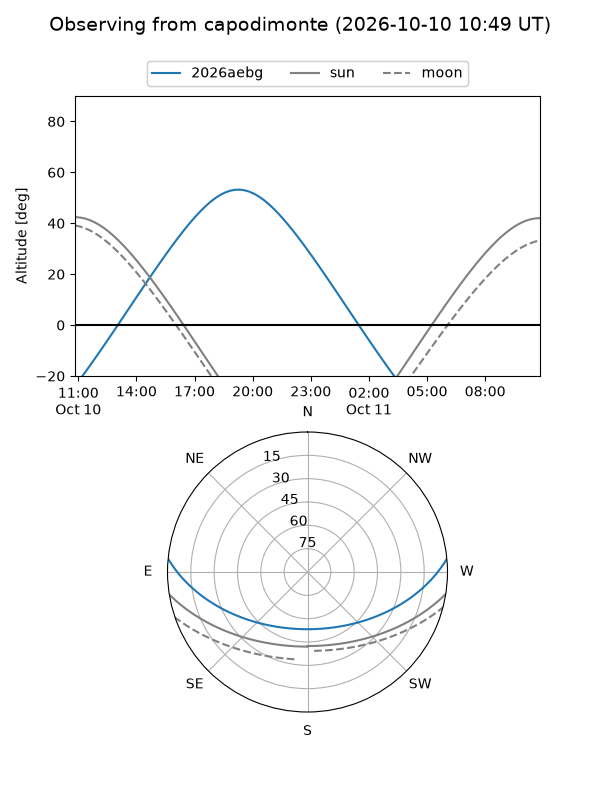
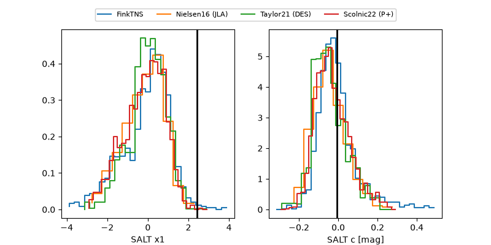

2026aebg
Target 2026aebg at 2026-10-10 13:26
Aliases and brokers:
FINK-ZTF: ztf.fink-portal.org/ZTF26abypolw
Lasair-ZTF: lasair-ztf.lsst.ac.uk/objects/ZTF26abypolw
ALeRCE-ZTF: alerce.online/object/ZTF26abypolw
YSE-PZ: ziggy.ucolick.org/yse/transient_detail/2026aebg
TNS name: wis-tns.org/object/2026aebg
Direct TNS query: direct search
alt names
ZTF26abypolw (ztf,fink_ztf)
2026aebg (tns,yse)
Coordinates:
equatorial (ra, dec) = 322.1724,+3.96336
equatorial (HMS+DMS) = 21:28:41.37,+03:57:48.08
galactic (l, b) = (57.3066,-32.07244)
Flags:
peak dt: -5.3
Photometry:
last atlaso=19.25, ztfg=18.79, ztfr=18.92
1 atlaso, 7 ztfg, 8 ztfr detections
Lightcurve

Visibility



Additional plots
